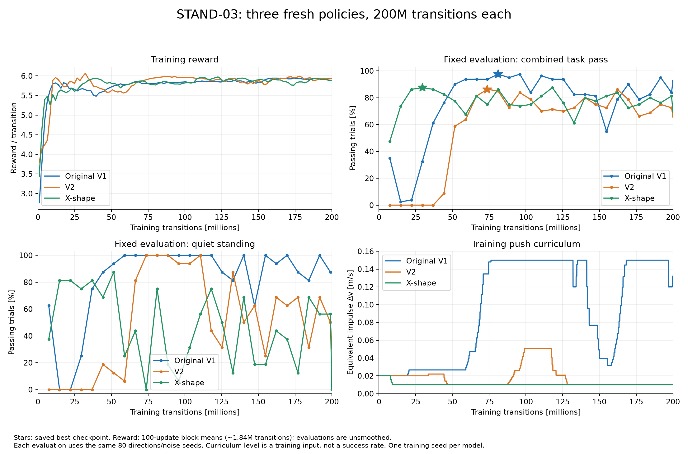
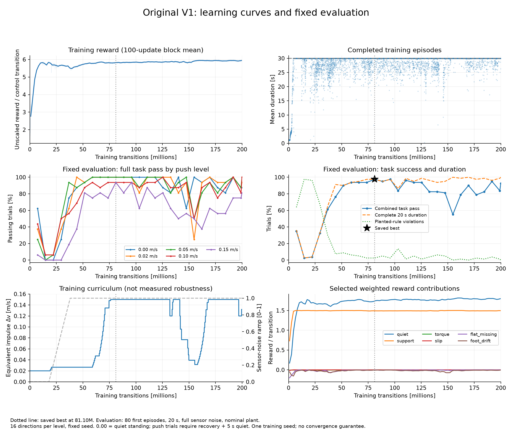
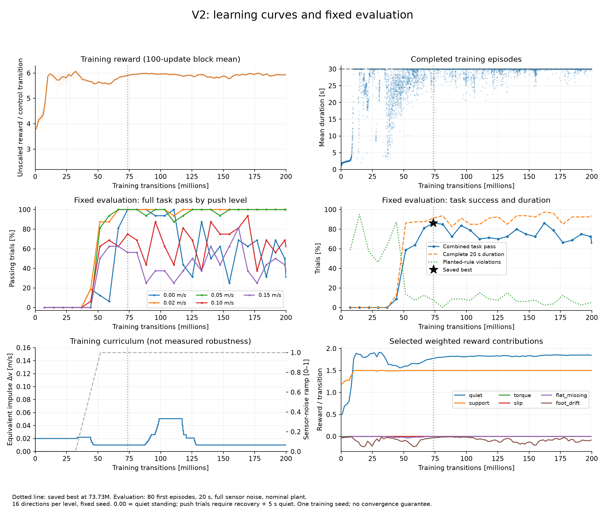
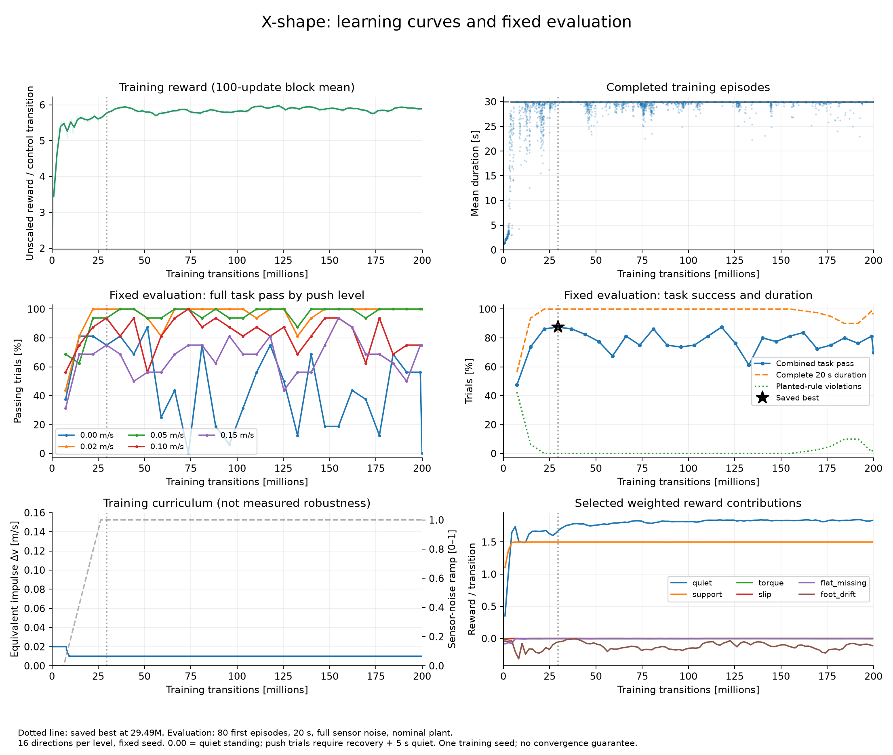

All three runs completed 200,005,632 steps, exit 0. Original V1: 7h11; V2: 9h33; X-shape: 9h31. Best checkpoints selected by fixed 80-trial task score; the final policies are weaker. These are simulation results with one training seed per model; X-shape mass correction remains provisional.
How to read success: quiet trials must complete 20 s and finish with five seconds of quiet standing. Pushed trials must complete 20 s, start a five-second quiet window within two seconds after the pulse. A full-duration trial can still fail the quiet criterion. Push tests score the completed recovery window; they do not require the last five seconds to be quiet. See results and metric limitations.
Comparison PDF
Best checkpoint: 81.10M transitions; archived task pass 78/80. Final: 74/80. Independent replay: 78/80.
Two independent trials, fixed before outcomes: quiet standing (left), +X 0.10 m/s-equivalent push at 5 s (right). Blue = left foot, orange = right. 1× speed. Any ended trial freezes with a visible warning; no reset splicing.
Vector PDF
Best checkpoint: 73.73M transitions; archived task pass 69/80. Final: 53/80. Independent replay: 69/80.
The fixed forward-push trial falls at 6.50 s. Its last pre-terminal pose is held with a warning; the quiet trial completes and passes.
Two independent trials, fixed before outcomes: quiet standing (left), +X 0.10 m/s-equivalent push at 5 s (right). Blue = left foot, orange = right. 1× speed. Any ended trial freezes with a visible warning; no reset splicing.
Vector PDF
Best checkpoint: 29.49M transitions; archived task pass 70/80. Final: 56/80. Independent replay: 70/80.
Replay total matches the archive, with quiet passes changing 12/16 to 13/16 and 0.15 m/s passes changing 12/16 to 11/16. This per-level variation remains unexplained.
Two independent trials, fixed before outcomes: quiet standing (left), +X 0.10 m/s-equivalent push at 5 s (right). Blue = left foot, orange = right. 1× speed. Any ended trial freezes with a visible warning; no reset splicing.
Vector PDF